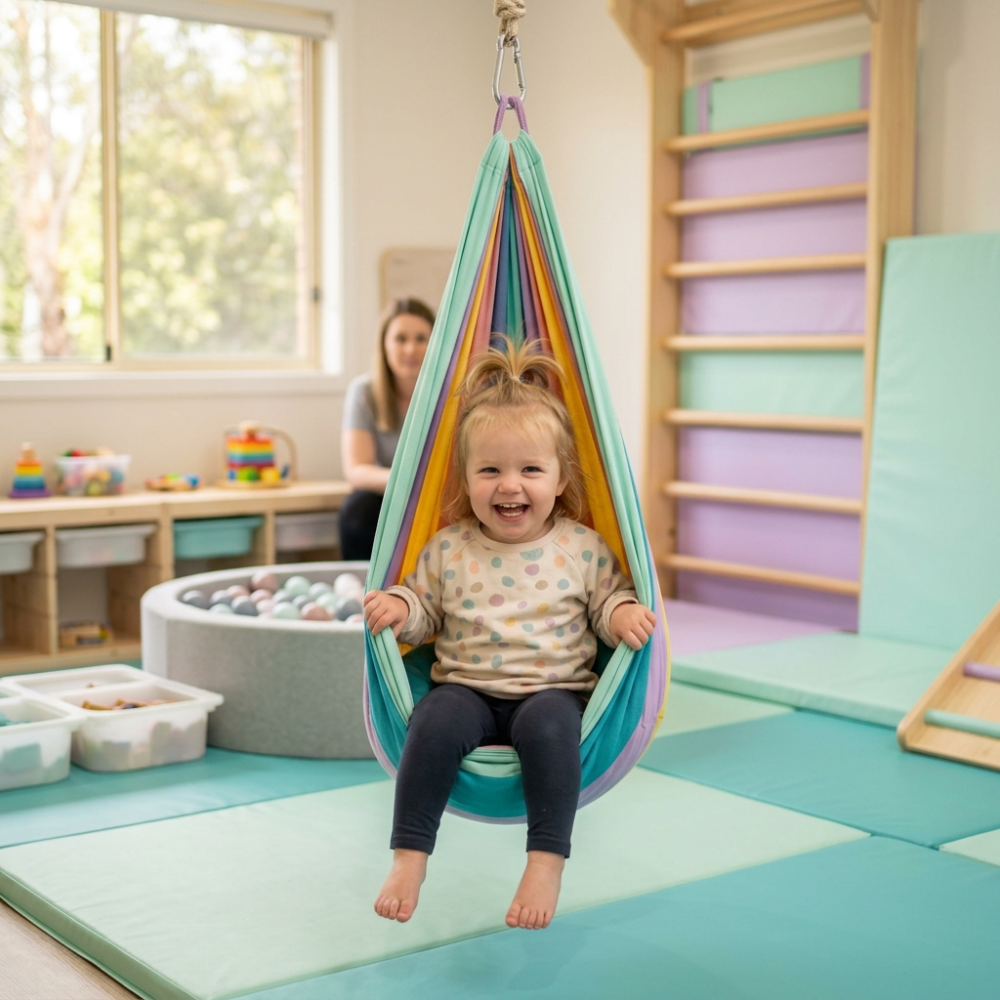
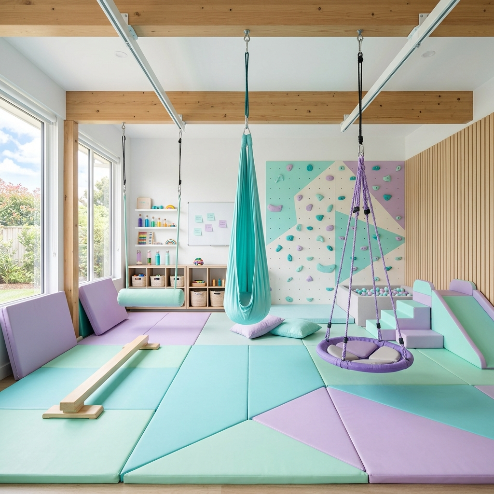

Profesjonalna terapia integracji sensorycznej i terapia ręki dla dzieci w Kielcach.
Pierwsze spotkanie obejmuje konsultację i wstępną ocenę potrzeb dziecka.

Nasz gabinet zapewnia wsparcie dla dzieci borykających się z różnymi trudnościami na co dzień.
Specjalistyczne podejście dostosowane do indywidualnych potrzeb młodego pacjenta.
Indywidualne zajęcia wspierające rozwój dziecka poprzez zintegrowany ruch i zabawę w wyposażonej sali.
Poprawa sprawności dłoni, chwytu, przygotowanie do pisania i precyzyjny rozwój motoryki małej.
Praktyczne wskazówki, diagnoza oraz stałe wsparcie do efektywnej pracy z dzieckiem w zaciszu domowym.
Możliwość prowadzenia zajęć u klienta dla najwyższego komfortu dziecka – cena ustalana indywidualnie.
Poznaj potrzeby swojego dziecka podczas pierwszej stacjonarnej konsultacji i sprawdź, jak nasi specjaliści mogą bezpiecznie pomóc. Zrozumienie problemu to połowa sukcesu.
Odbierz Zniżkę
Przejrzyste zasady i elastyczne pakiety.
Kielce
Kielecki Park Technologiczny
Zdecydowanie nie! Terapia ma formę "naukowej zabawy". Dziecko uczestniczy w ćwiczeniach angażujących ruch i zmysły, co przeważnie daje mu dużą radość i satysfakcję.
Standardowa sesja terapii SI trwa zazwyczaj 45 do 50 minut. Czas ten jest podyktowany zdolnością koncentracji dziecka oraz intensywnością bodźcowów.
Reakcja układu nerwowego to kwestia indywidualna. Zwykle niewielkie pozytywne zmiany w mniejszej nadpobudliwości czy lepszej koncentracji można zauważyć po około 2-3 miesiącach regularnych zajęć.
Skontaktuj się i sprawdź, jak możemy pomóc Twojemu dziecku w osiągnięciu ukrytego potencjału.